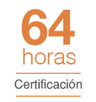

Anticipa el Riesgo y Mejora las Condiciones Laborales
Como parte de sus programas de extensión, La Escuela de Posgrado de la Universidad Tecnológica del Perú (EPGUTP) ha diseñado el Programa de Especialización en Seguridad y Salud Ocupacional y Medioambiente con la finalidad de capacitar profesionales en la gestión y mejora continua de los factores de riesgo de Seguridad y Salud Ocupacional y Medioambiente, a los que se encuentran expuestos los trabajadores, tanto en empresas públicas y privadas.
Por ello, se requiere identificar estos factores, implementar sistemas de gestión que los minimicen y generar competencias que permitan a las empresas lograr un lugar de trabajo seguro, saludable y debienestar, así como cumplir con las normas vigentes en materia de salud y seguridad en el trabajo.
"Implementación de Sistemas de Gestión que minimicen los Riesgos Ocupacionales cumpliendo con las Normas Vigentes".
Beneficios
-
Certificación Progresiva
Al culminar satisfactoriamente cada módulo, el participante recibe una certificación. Una vez finalizado el Programa, el egresado recibe un diploma del Programa de Especialización en Seguridad y Salud Ocupacional y Medioambiente a nombre de La Escuela de Postgrado de la UTP (EPG).
-
Metodología
Modelo educativo basado en el estudio de casos que promueve la participación activa de los participantes, aprendizaje colaborativo.
-
Aula Virtual de la EPG UTP
Acceso al Aula Virtual de la EPG UTP.
Dirigido a
Profesionales y/o técnicos de diversas áreas de desarrollo o sectores económicos, que se desempeñen como Directores, gerentes, jefes o supervisores de Proyectos.
Consultores o miembros de equipos de proyectos
Toda persona interesada en desarrollarse profesionalmente en el ámbito de la gestión de proyectos.

Malla Curricular
-
Módulo I - Gestión del Riesgo
Certificación Gestión del Riesgo:
- Introducción a la Gestión del Riesgo.
- Principios Generales.
- Normas y Estándares Nacionales.
- Normas y Estándares Internacionales.
- Modelo de Madurez en Gestión de Riesgos SSO 
-
Módulo II - Sistema de Gestión SSO:
Certificación en Sistema de Gestión SSO:
- Introducción a la Gestión SSO (ISO 45001)
- Dirección Estratégica de la SSO
- Liderazgo y Participación de los Trabajadores
- Legislación y Fiscalización en SSO
- Trabajos de Alto Riesgo
- Gestión de Riesgos SSO
- Salud Ocupacional y Bioseguridad
- Investigación de Accidentes e Incidentes
- Auditorias en SSO
- Tendencias en la Gestión SSO
-
Módulo III - Gestión del Medioambiente
Certificación en Gestión del Medioambiente
- Introducción a la Gestión Ambiental (ISO 14001)
- Dirección Estratégica Ambiental
- Legislación y Fiscalización Ambiental
- Gestión de Riesgos Ambientales
- Auditoria Ambiental
- Tendencias en la Gestión Ambiental